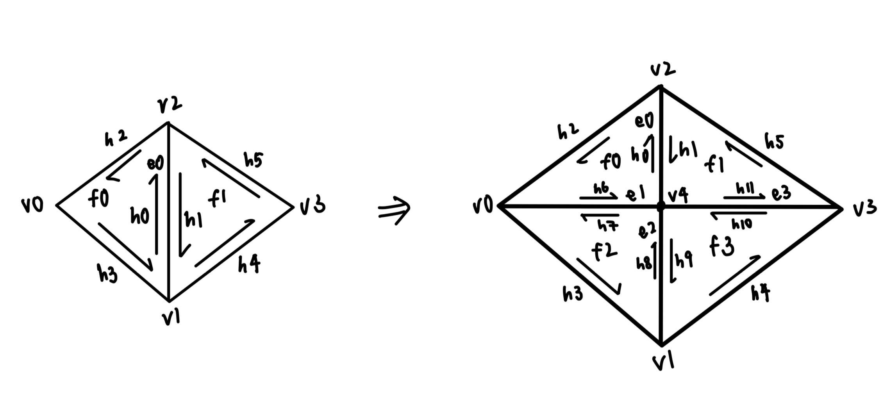

Hosted on: https://cal-cs184-student.github.io/hw-webpages-sp24-ongjx16/hw2/index.html
In this assignment, I have learnt the basics of how to implement and manipulate curves and meshes, which includes using variations of subdivision such as de Casteljau subdivision and loop subdivision. I think the most interesting part of this assignment is learning and understanding the simplicity of how subdivision works. Seemingly complex operations like 2d subdivision and loop subdivisions are basically just utilising simple functions such as edge split and 1d subdivisions as basic building blocks, and simply tweaking the order or method of implementations to get increasingly complex results.
Given a set of control points, de Casteljau's algorithm uses linear interpolation between adjacent points and generates intermediate sets of control points recursively until only one point is generated, which is the point at which the resultant Bezier curve will pass through. The algorithm uses a predetermined float t that determines the extent of linear interpolation.
To implement this for a specific layer of evaluation, I took the input set of points and iterated through all the points. For each point, I used the formula of Vector2D interpolatedPoint = points[i] + t * (points[i + 1] - points[i]) to get the resultant point in between the point and its adjacent point. This interpolatedPoint is then added to an array of points that are then returned as the result of the function.


The de Casteljau algorithm for Bezier surfaces is basically an extension of that for a curve. Given a set of nxn control points (2d array), we first use the 1D algorithm to calculate a resultant point for each row of control points, using the parameter u (equivalent to parameter t in task 1).
With the group of points obtained from all rows, we then use these points to perform linear interpolation again (in the other direction) to get the resultant point that would appear on the Bezier surface, this time using the parameter v.
To implement this in code, I first implemented the same thing as in task 1 for the evaluateStep() function, but working with Vector3 instead of Vector2 data structures. For evaluate1D(), I then called evaluateStep() recursively until only one vector3D point is returned, which would be the resultant vector produced for a set of control points in a row. Lastly, in evaluate(), I first ran through each row in controlPoints and called evaluate1D() for each row with parameter u, adding each vector obtained to an initialised array called interpolatedPoints. Then, I ran evaluate1D() with parameter v using interpolatedPoints, then returned the resultant point on the Bezier curve.

First, to iterate through all faces I used a do-while loop to iterate through all the faces using the twin structure of the halfedge, and stopping once I return back to the starting halfedge.
For every iteration of the do-while loop, I obtain the 3 vertices of the current face. Then, I calculate two edge vectors using the 3 vertices, and used the two vectors to obtain the cross product, and the area of the triangle (half the magnitude of the normal vector). Then, I multiply the unit normal vector with the area of the triangle, and add it to the sum of normals for all faces. Additionally, I also kept track of the sum of all areas of the faces.
Lastly, I normalised the sum of all area-weighted normals by dividing the sum by the total area of all faces. This normalised sum is then the returned as the result of the Vertex::normal() function.


First, I obtained the pointers to all the relevant halfedges, faces, edges, and vertices connected to a specific edge. Then, I went through all the elements (vertices, edges and faces) and updated the half-edge pointer in each of their structures. Thereafter, I updated each of the 6 half-edges using setNeighbours(), and returned the new edge pointer.
For a long while, I was stuck with a code that managed to flip an edge only once, but stopped working once I flipped adjacent edges. To try to work out whats was happening, I first used check_for() to check all the relevant vertices, edges and faces. However, they all seemed to be producing seemingly logical results, so I then checked for all the 6 half-edges. Then, I realised based on the number of pointers each half-edge had, the wrong half-edge was being assigned as a pointer to the face of the edge's twin. Once I properly assigned the pointers of all the half-edges, the code managed to work properly.
First, I declared the pointers to all related half edges (12), vertices (5), edges (4) and faces (4), including the new ones that are created due to an edge split. When declaring the new vertex, I also calculated its position by finding the midpoint of the two vertices of the edge that is being split.
Thereafter, I updated the halfedge pointer of all the vertices, edges, and faces, then update all halfedges using setNeighbours(), and returned the pointer to the new vertex created. Below shows the corresponding elements that are declared and created due to an edge split.
Implementing this was relatively straightforward, especially after implementing edge flip, as the concept is very similar. I think one interesting thing to note is that for quite a while, I was declaring two edge pointers per edge, instead of one, which resulted in very confusing results, especially when I moved on to part 6. Thus, even though it worked seemingly well, when it came to implementing subdivisions, I realised that it was flawed and had to return to edit the code such that each edge only had one edge pointer declared.
First, I iterated through every vertex in the input mesh and set isNew = false, as well as calculated its new position and stored it in v->newPosition. Thereafter, I iterated through every edge in the input mesh, and used the formula given to calculate the new position of the vertex that would be created after the edge splits, and stored it into edge->newPosition.
Then, I iterated through every edge in the input mesh and split them. To ensure that I am only splitting edges in the input edge, I checked that the edge to be split is drawn between two old vertexes (isNew = false). To correctly update the new edges, I also edited the splitEdge function, such that the two new edges created (blue edges) are recorded as new, while the black edges (old edge and one of the new edges) is recorded as old. This ensures that in the edgeFlip part, I am only flipping edges that are 'new'. Additionally, I also marked the new vertex created from the edge split as a new vertex, and assigned its newPosition as the newPosition value of the edge.
After splitting every edge, I iterated through all the edges again, and flipped edges that are marked as new, that connects an old and new vertex.
Lastly, I iterated through all the vertexes and assigned its position value as its newPosition value.
One problem I faced during this implementation was that I mistakenly reassigned all the existing vertexes as old vertexes in my edgeSplit function, but this proved to cause an infinite loop as I was constantly changing new vertexes to old, and thus the amount of old vertexes to iterate through was not decreasing. To figure out what was wrong, I utilised stdout statements to figure out which loop was stuck, and then investigated which parts were the problem by toggling isNew value assignments and ultimately realised that the old vertexes were the problem.
Loop subdivision causes meshes to not only shrink in volume, but also smooth sharp corners and edges. With every iteration of subdivision, the sharp edges and corners of meshes become more rounded. One method to prevent this would be to pre-split edges at which one desires to retain the sharpness of, since the local geometric complexity around these areas would increase due to pre-splitting, therefore reducing the effects of the averaging process involved in loop subdivision.
Given that the initial mesh of the cube has only two triangles on each face, the lack of symmetry in the mesh is expounded as the mesh subdivides. Thus, to ensure that the cube subdivides symmetrically, we would have to preprocess the mesh such that each face is symmetric. To do so, I split the slanted edge on each face such that there are 4 triangles on each face instead of 2, lending each face a symmetry that then translates to symmetric subdivision.